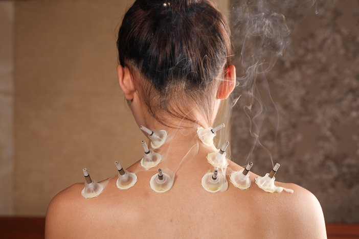

艾灸：你是不是也有过这样的经历?在经过一天忙碌的工作后，突然感觉肩颈疼，脖子肩膀僵硬，像个机器人一样无法完成扭头等动作，晚上睡觉更是无法得到很好的休整;在或者早晨起床后经常出现“落枕”的情况，那种疼痛僵硬以及给日常生活带来的不便，我相信你肯定不会轻易忘记。

肩颈疼痛是如何造成的?
“静、老、伤、寒”是引起肩颈疼痛发作的四大原因。这四个字非常好理解，大部分人一看就知道，它们指的是缺少运动、衰老、受伤、受寒。 办公室工作者每日运动量不够，且不正规的坐姿会导致颈部受累僵硬，工作时间长，肩膀总是悬空，长时间伸头玩电脑，低头玩手机，这样就会导致肩颈疼的出现;在加上受凉或者夏天吹空调等，长期不重视，病情恶化，就会导致肩周炎甚至颈椎病的发生。
万病之源源于血，百病之由由于气，中医上讲：气不足则血不畅，血不畅则水不流，水不流则毒不排。肩颈就像人体的十字路口，是气血供应头部的主要通道。颈部有任脉、督脉两条大动脉，是阳气路径的通道，容易堵。经络不通畅，是致病的关键。
肩颈疼痛有什么影响呢?
颈椎病病通常会引起失眠，头痛，手臂麻木，记忆力衰退，听力下降，眼睛视力下降，消化不好，胸闷心情烦躁等等。总之颈椎病会引起我们颈部以上部位的问题。因为我们颈部后侧有动脉通过，当我们颈椎失去了本来的生理弯曲，我们动脉血液也无法正常的流通，这也是在活动颈椎的时候我不建议大家挤压颈部后侧的原因。挤压颈部后侧或者动脉就会出现晕眩脸部发红，特别是高血压人群更要注意这个问题。
自己如何检查颈部是否处于健康的状态呢?
你可以尝试去低头去找锁骨，仰头下巴去找天花板，然后让你的耳朵去找肩膀，看是否可以灵活做到。如果你可以轻松做到，那说明你的颈椎是健康的。
特别提醒：颈椎强直的人群低头是很难靠近锁骨的，但是仰头，和左右是没问题的
肩颈养护，艾灸当先
艾灸通经活络、祛湿散寒、行气活血、消淤散结，可疏通肩颈血液循环，对大脑供血不足引起的头痛、失眠有明显改善，可舒缓、改善肩颈椎问题，提高人体免疫力，疏通肩颈经络，驱除疲劳，提升精气神。
艾灸取穴：
【阿是穴】：局部疼痛点，也就是哪里不舒服艾灸哪里，可以缓解疼痛。
【风池】取穴：风池穴位于颈部，当枕骨之下，与风府穴相平，胸锁乳突肌与斜方肌上端之间的凹陷处。
【大椎】取穴：在后正中线上，第七颈椎棘突下凹陷中。
【天宗】取穴：在肩胛部，大致在肩胛骨的正中，冈下窝中央凹陷处，与第四胸椎相平。
【肩井】取穴：大椎与肩峰端连线的中点上，前直对乳中。
【肩髃】取穴：将上臂外展平举，肩关节部即可呈现出两个凹窝，前面一个凹窝中即为此穴;或者垂肩，当锁骨肩峰端前缘直下约2寸，当骨缝之间，手阳明大肠经的循行线上处取穴
【肩髎】取穴在肩部，肩髃后方，当肩关节外展时于肩峰后下方呈现凹陷处。
艾灸方法：
每个穴位艾灸10-15分钟，7-10天一个疗程 休息2-3天，再继续。
冰冻三尺非一日之寒，肩颈问题的改善，需从生活习惯着手，配合艾灸长期理疗。
另外介绍一个按摩缓解肩颈疼痛的法子
请您按一下步骤去做：
1、按摩我们颈部后侧从上到下3-5分钟。
2、按摩风池穴(位于耳垂与大椎连线的凹陷处)指肚按住30s，你会感觉到我们眼睛也会立即明朗，这就是经络的魅力。
3、按摩肩井穴(位于大椎与肩膀中间，大约在肩峰位置，注意是肌肉上，不是骨头上)，你可以用食指和无名指压住中指按摩1-3分钟，会有酸胀的感觉。
4、按摩天宗穴(大体位于肩胛骨外侧)，同样是有酸胀的感觉，轻一点按住就好。
按摩后你可以稍微的低头仰头去感觉一下我们的颈部是不是立刻有放松的感觉了，接下来你可以双手于颈部后侧十指相扣，然后双手用力挤压住颈部肌肉，然后由下向上去提拉颈部的肌肉，同样可以促进我们颈部血液循环，增强肌肉的弹性。
原文出处：http://aiyijiu.github.io/article/231.html 更多艾灸资讯尽在天天爱艾灸网！